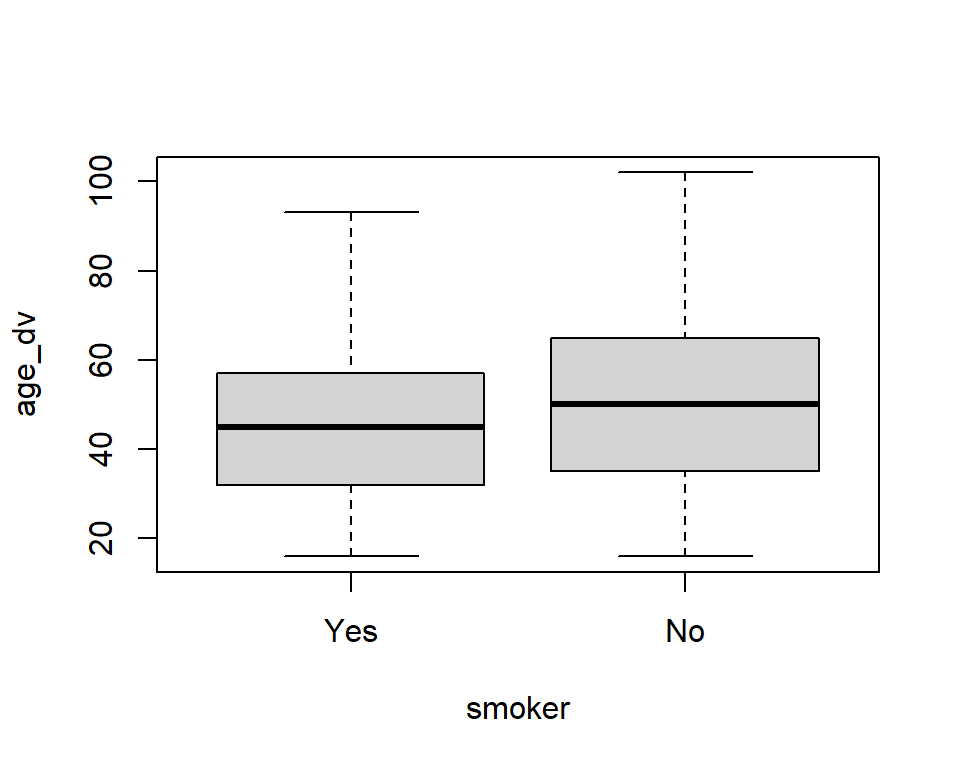

This worksheet introduces a new type of regression model: (binary) logistic regression.
The logistic regression model attempts to predict the probability that an observation falls into one of two categories of a dichotomous dependent (outcome) variable based on one or more independent (predictor) variables that can be either continuous (numeric) or categorical (“factors” in R, whether categories are ordered or not).
In many ways, logistic regression is like linear regression, except for the measurement type of the dependent variable (i.e., linear regression uses a numeric dependent variable rather than a dichotomous one). However, unlike in linear regression, you are not attempting to determine the predicted value of the dependent variable, but the probability of being in a particular category of the dependent variable given the independent variables. An observation is assigned to whichever category is predicted as most likely.
A logistic regression is thus based on the fact that the outcome has only two possible values: 0 or 1. Often, 1 is used to denote a “case” whereas 0 is then a “non-case”. (E.g. Is someone a smoker? Yes=‘the case’, or ‘true’, No=‘non-case’, or ‘false’). Logistic regression is used to predict the “odds” of being a “case” based on the values of the x-variable(s). Just as for linear regression analysis, we get a coefficient (the ‘log of the odds’) that shows the effect of x on y. However, because logistic regression is based on other assumptions than linear regression, we cannot interpret these coefficients very easily. Instead, we focus on something called the “odds ratio” (OR). The “odds ratio” can never be negative – it can range between 0 and infinity, with the value 1 representing equal odds (i.e. no effect - just like 0 represented ‘no effect’ in linear regression). What the OR actually stands for – and whether we can say that an effect is small or big – depends on the values of x and y. The OR can be further transformed into probabilities, which are standardised values (i.e. between 0 and 1, and as such convertible to a percentage between 0% and 100%). and are easier to interpret.
Open the R Studio interface by clicking on the SOC2069-Statistical-analysis.Rproj file included in the SOC2069-Statistical-analysis project folder that you downloaded from Canvas in Lab6. The folder should be stored on your Newcastle University OneDrive and accessible from any computer
If you haven’t yet downloaded the project folder in TW11 (Lab6), then download it from Canvas. Tip: If you haven’t completed the Lab6 worksheet, it will be difficult to follow the next steps; please go through Exercise 1 and 2 of Lab6).
Create a new blank R script for this lab session
Check Exercise 1, Task 2 of Lab6) if you need help with this. Tip:
or
Write a comment line at the top of the new script to briefly detail what the script is about (e.g. # Script for Lab x, Week y). Tip: in R scripts the hashtag (#) denotes that the text following it on the same line is just a comment, not a programming command.
Load user-written R packages we commonly use with the library() function
Check Exercise 1, Task 4 of Lab6 if you need help with this. Tip: You may need to first install the package with the install.packages() function if it’s not yet installed
# If you need to first install the packages, remove the hashtag # from in front of the `install.packages()` command to un-comment it # and run it# install.packages(c("tidyverse", "mosaic", "sjmisc", "jtools")) library(tidyverse)library(mosaic)library(sjmisc)library(jtools)
Load the ukhls_w8.rds dataset to an object in the session Environment; let’s call that object “ukhls”:
ukhls <-readRDS("ukhls_w8.rds")
Check Exercise 1, Task 4 of Lab6) if you need help with this. Tip: Specifying only the file name without a path assumes that you have followed Step 1 above correctly and your working directory is the RProject. If not, go back to Step 1.
Exercise 1: What factors influence smoking behaviour?
About 60 minutes
Step 0: Formulate your “research question”
Say we want to find out what are the factors that influence smoking behaviour (i.e. smoking or not smoking). If this is our research question, then we need a dependent variable relating to smoking behaviour and some independent variables relating to possible influencing factors.
We know that in the UKHLS (Understanding Society) dataset we have a useful variable relating to smoking, which could serve as the dependent variable (if we search the data catalogue we find the following variable: smoker, a factor variable with two levels (“yes” and “no”) with relatively few missing values (4.4%). We already see there how the variable is distributed, with the majority of the respondents (85%) being non-smokers.
Now that we know that the variable we want to predict (“smoker”) is a categorical variable with two categories, we know that a linear regression would not be the appropriate method. Instead, the statistical model we should use is the logistic regression.
Now we need to ask ourselves about what independent variables we want to include. These are the variables that can potentially influence smoking behaviour. This is primarily a theoretical question (i.e. thinking logically, or based on our readings of sociological literature, what factors might have an influence on smoking?), but we also need to make sure that any variable (factor) we think of, actually exists in our data-set. So let’s look at our data-set and search for some possible factors.
For this example exercise I propose that we consider the following three variables as our independent variables: sex, age_dv and finnow [“Subjective financial situation - current”].
If this were your assessment research question, you would start by first examining each variable separately using descriptive statistics, and examining how predictors are associated with the dependent variable using bivariate descriptive statistics. After that, you would want to check how all the factors considered together might influence smoking behaviour, for which a logistic regression is the appropriate method.
Step 1: Find, describe and understand your variables
We have already practised descriptive statistics a lot, so this step should be easy by now. We also already know how the “age_dv” and “sex” variables look like, but for the sake of practice - as you would also do in your assignment! - let’s run some descriptive statistics on them too. “Smoker” and “finnow” (or “=current financial situation, financial situation now) are new variables to us.
### Complete the code below# Descriptive statistics for 'sex':...# Descriptive statistics for 'age_dv':...# Descriptive statistics for 'smoker':...# Descriptive statistics for 'finnow':...
Questions
Examine the descriptive results from the tables you’ve produced and answer:
What is the valid percentage of smokers in the dataset?
What type of variable is finnow?
What is the total number of survey respondents who declared that they are finding it quite or very difficult to get by with their available financial resources?
Coding tip: Use select() with summary()
There’s an easy way to get some quick summary statistics for a selected small number of variables of interest from a dataset. We can first use select() to select out the variables we want, then ask for a summary() on the whole of that selected mini-dataset:
sex age_dv smoker
male :17925 Min. : 16.00 Yes : 5519
female:21368 1st Qu.: 34.00 No :32058
Median : 49.00 NA's: 1716
Mean : 48.77
3rd Qu.: 63.00
Max. :102.00
finnow
Living comfortably :12459
Doing alright :14748
Just about getting by : 7570
Finding it quite difficult: 1882
Finding it very difficult : 800
NA's : 1834
Note that this only shows basic descriptives, so for example we do not get the percentage distribution of the frequencies in the frequency tables for categorical variables, so we can’t easily answer all the questions above using this.
Step 2: Modify your variables (if needed)
Now that we know how our variables look like, let’s think: are there any variables that require some modification? Not necessarily, in this case, becasue we don’t have any obvious mistakes or superfluous labels/categories in these variables. We know from previous weeks that recoding the age variable by median-centring it may help with the interpretation of the regression results because then the “Intercept” coefficient would not refer to someone who is aged 0, but to someone who has the median age in our dataset. Because we usually do not need to interpret the “intercept” in multiple regression (with many predictors included in the model), we can leave the age variable as it is for now. The only change that we may want to ponder is whether combining the last two levels/categories of the financial situation variable may be sensible. The reason for this may be because these two levels contain far fewer responses than the other three categories, and it’s always better to have a balanced categorical variable. However, the number of responses in each category is still large enough not to cause statistical complications for the model. The other reason why we may want to collapse the last two categories into one, is that it will make reading the regression output far more manageable. We know from the previous week that if we include a categorical variable as predictor into a regression model, we need to break it down into a series of new binary/dummy variables, one for each level/category. We know that R does this automatically for us if we tell it that our variable is a factor (i.e. categorical), but then in the output we will have quite a few variables to interpret, each with its own regression coefficient. Finally, if we wanted to collapse the last two categories, we could do so because it would make sense conceptually to group together those who are “finding it … difficult”. We may even be able to make an argument that those who are “just about getting by” are closer to those who are finding it difficult than to those who are “doing alright”, and we may decide to collapse the last three categories together. These are all subjective choices for us as data analysts to make. We need to consider both statistical/mathematical criteria (e.g. the number of cases/responses in the various categories) as well as substantive sociological knowledge about the topic (in this, case, self-assessed poverty). Cutting out or collapsing data always means that we are throwing away additional information that could potentially be useful. It’s a trade-off that we need to consider. But as a first step in any analysis, once we have considered what transformations was be possible or necessary, I suggest that you always fit a first model on the complete dataset to get a sense of how the model behaves, and then decide whether any transformation may be preferable. So, for now, we won’t change anything.
Step 3: Describe the relationship between your variables
We have many variables here, so we will need to focus on the most useful comparisons. What we are interested in is how our predictor variables relate to our outcome variable, smoker.
Boxplots to compare group medians
We have already practiced describing the relationship between numeric and categorical variables visually using box-plots, and we can apply the same here to compare the median ages of smokers and non-smokers in our dataset:
boxplot(age_dv ~ smoker, data = ukhls)

Questions
Is the median age of smokers higher than that of non-smokers?
Are there any extreme outliers?
To describe the relationship between two categorical variables, we need to a method we haven’t practiced before: a cross-tabulation or contingency table. You should be very familiar with these types of tables. They show the distribution of a categorical variable contingent on another categorical variable.
Again, there are several ways to get simple contingency tables and there are numerous functions is various packages that make more complex or nicely formatted contingency tables. For simplicity, we’ll only look at the options available using base-R and the packages we are already familiar with.
Crosstabulations: the xtabs() function
Using the base-R function xtabs() we can write:
xtabs( ~ smoker + sex, data = ukhls)
sex
smoker male female
Yes 2706 2813
No 14062 17996
This shows us the frequency distribution of the smoker variable by each category of the sex variable, and vice-versa, depending on whether we read it row-wise or column-wise. If we want to also see the marginal totals (for columns and rows), we can pipe on the table to the addmargins() function:
xtabs( ~ smoker + sex, data = ukhls) %>%addmargins()
sex
smoker male female Sum
Yes 2706 2813 5519
No 14062 17996 32058
Sum 16768 20809 37577
If instead of frequencies we would like to see the proportions (percentages), we can pass the xtabs table on to the prop.table() function, where we should also select whether we are interested in row or column percentages using the margin = option (where 1 stands for rows and 2 for columns). It’s up to us to decide which option is best for our analysis. We can do both in turn, because they help us answer different questions.
In general, if we have a clear outcome variable - like smoker in our case - then we would want to place its categories in the rows and show the values of the predictor (sex in our case) in the columns. If so, then column proportions would tell us the ratio of smokers and non-smokers among women and men, while row percentages would tell us the ratio of men/women among the smokers or non-smokers:
sex
smoker male female
Yes 0.1613788 0.1351819
No 0.8386212 0.8648181
If we’re annoyed by the many decimals and want to see a cleaner table rounded down to two decimal places, we can pass the prop.table further to a round() function, where we also specify the desired number of decimal places. Let’s say we want to show only 2 decimals (we can also simplify the previous command by not spelling out “margins =” in the command and simply giving it’s value):
xtabs( ~ smoker + sex, data = ukhls) %>%prop.table(1) %>%round(2)
sex
smoker male female
Yes 0.49 0.51
No 0.44 0.56
xtabs( ~ smoker + sex, data = ukhls) %>%prop.table(2) %>%round(2)
sex
smoker male female
Yes 0.16 0.14
No 0.84 0.86
If we have row proportions, the values across rows should add up to 1 (i.e. 100%); if we have column proportins, then they should add up to 1 vertically, across columns; if they don’t, then we’ve done something wrong. For example, if we do not specify a margin =, then by default the proportions will be calculated per cell (rather than by row or column) respective to the total number of respondents.
If we prefer to convert the proportions to percentages, we can simply multiply the prop.table by 100:
sex
smoker male female
Yes 16.13788 13.51819
No 83.86212 86.48181
Crosstabulations: the flat_table() function from {sjmisc}
We’ve already used the {sjmisc} package, and it contains another function that may be useful for crosstabulations: flat_table(). It gives similar results to those above, but the code may be a bit more simple. We just need to list the variables we want to cross-tabulate, separated by commas; to show proportions, we can add an additional argument margin = and choose either “row” or “col” as a value. The results are shown directly as percentages (i.e. proportions * 100) rounded down to two decimals:
sjmisc::flat_table(smoker, sex, data = ukhls)
sex male female
smoker
Yes 2706 2813
No 14062 17996
# or as row percentages:sjmisc::flat_table(smoker, sex, data = ukhls , margin ="row")
sex male female
smoker
Yes 49.03 50.97
No 43.86 56.14
# or as column percentages:sjmisc::flat_table(smoker, sex, data = ukhls , margin ="col")
sex male female
smoker
Yes 16.14 13.52
No 83.86 86.48
The issue with this function is that it cannot include marginal totals; for that, the xtabs() %>% addmargins() option would be the way to go.
Questions
So, what have we learned so far about the relationship between sex and smoking behaviours? - Are there more men or women among the non-smokers? - Is the percentage of smokers among men higher or lower than among women?
Task
Using the functions we’ve learnt above, summarise the relationship between smoking behaviour and financial situation using cross-tabulations. Tip: because the finnow variable has so many levels (categories), it’s visually better to place it in the rows.
### Complete the tasks below:# Contingency table of 'finnow' by 'smoker' showing frequencies and marginal totals...# Contingency table of 'finnow' by 'smoker' showing column percentages:...# Contingency table of 'finnow' by 'smoker' showing column percentages:...
Questions
What have we learned about the relationship between subjective financial situation and smoking behaviour? - Among which financial-situation group is the proportion of smokers the highest? - Which financial-situation group has the highest percentage among the smokers? And explain why this is the case, give the answer to the previous question! (tip: look again at the frequency contingency table too) - Overall, based on these results, would you say that there is an association between financial situation and smoking behaviour? If so, why do you think that?
Step 4: Model the relationship between your variables
Of course, we need to check whether your answer to the last question above stands up against statistical validation. This is where regression modelling comes in. We can fit three separate bivariate models here, checking in turn the predictive power of each of the three predictor variables, as we have done in previous weeks. Then, our final aim is to fit a model that estimates the effect of financial situation on smoking behaviour while also accounting for the effect of age and sex; that is, a multiple regression with more than a single predictor. In this exercise we will fit the final, full model to get an idea of the overall picture, but you can then check on your own how simpler models with fewer predictors behave.
Our challenge compared to previous weeks is that now our outcome variable of interest, smoker, is not a numeric/scale variable but a dichotomous, categorical one. So the units in which we can measure any effect on this outcome “scale” of 0/1 are no longer that easy to get our heads around. That means that interpreting the results is where the challenge will be.
The actual fitting of the model is fairly simple: we can use the function that fits a generalised linear model (glm()) using similar syntax to that of linear *m**odel (lm()), with the only difference that we should specify which “family” of distributions the outcome variable belongs to; a binary/dichotomous outcome has a so-called “binomial” distribution, and that’s what we need to tell R:
model_logistic <-glm(smoker ~ finnow + sex + age_dv, family = binomial, data = ukhls)
With the code above, we have saved the logistic regression output as an object called ‘model_logistic’, so we can perform some additional work on that model, such as getting a summary of it. Previously we have used both the summary() function from base R as well as the summ() function from the {jtools} package. This latter gives us better formatted summmaries and has several further options that will come extremely useful now wich logistic regressions; so let’s ask for a summ():
jtools::summ(model_logistic, digits=3)
MODEL INFO:
Observations: 37449 (1844 missing obs. deleted)
Dependent Variable: smoker
Type: Generalized linear model
Family: binomial
Link function: logit
MODEL FIT:
χ²(6) = 1253.769, p = 0.000
Pseudo-R² (Cragg-Uhler) = 0.058
Pseudo-R² (McFadden) = 0.040
AIC = 30034.905, BIC = 30094.620
Standard errors: MLE
---------------------------------------------------------------
Est. S.E. z val. p
---------------------------- -------- ------- --------- -------
(Intercept) 1.720 0.055 31.324 0.000
finnowDoing alright -0.517 0.040 -12.832 0.000
finnowJust about getting -1.007 0.043 -23.360 0.000
by
finnowFinding it quite -1.329 0.062 -21.607 0.000
difficult
finnowFinding it very -1.630 0.082 -19.872 0.000
difficult
sexfemale 0.238 0.030 8.005 0.000
age_dv 0.010 0.001 12.454 0.000
---------------------------------------------------------------
From log-odds to Odds Ratios
The coefficients (Est.imates) returned by our logit model are a bit difficult to interpret intuitively because they are measured on a strange mathematical scale called the log-odds, but which can be converted back to probabilities and odds ratios if we want. The advantage of log odds is that it follows the same logic we already know from linear regression: either an increase or a decrease of x value - for instance, here, being female as opposed to male is associated with 0.238 higher log-odds of being a non-smoker (remember that the smoker variable is coded such that yes is the first category (0) and no is the second category (1), so we are getting results for the probability of the second (1) category compared to the first (0), so for being non-smokers). But what this actually means in practice is very unclear.
It is more common to report odds ratios (OR) instead. An odds ratio less than 1 means that a unit increase in the value of the predictor variable leads to a decrease in the odds that the outcome is equal to its value 1 (being a non-smoker in our case). An odds ratio greater than 1 means that an increase in the predictor leads to an increase in the odds that the outcome is 1 (non-smoker). In general, the percent change in the odds given a one-unit change in the predictor can be determined as:
\[
Percent Chance in Odds = 100\times(OR-1)
\]
The summ() function of the {jtools} package makes it easier to request odds ratios (same as “exponentiated coefficients”) with the exp = option:
jtools::summ(model_logistic, digits=3, exp =TRUE)
MODEL INFO:
Observations: 37449 (1844 missing obs. deleted)
Dependent Variable: smoker
Type: Generalized linear model
Family: binomial
Link function: logit
MODEL FIT:
χ²(6) = 1253.769, p = 0.000
Pseudo-R² (Cragg-Uhler) = 0.058
Pseudo-R² (McFadden) = 0.040
AIC = 30034.905, BIC = 30094.620
Standard errors: MLE
--------------------------------------------------------------------------
exp(Est.) 2.5% 97.5% z val. p
---------------------------- ----------- ------- ------- --------- -------
(Intercept) 5.583 5.013 6.217 31.324 0.000
finnowDoing alright 0.596 0.551 0.645 -12.832 0.000
finnowJust about getting 0.365 0.336 0.398 -23.360 0.000
by
finnowFinding it quite 0.265 0.235 0.299 -21.607 0.000
difficult
finnowFinding it very 0.196 0.167 0.230 -19.872 0.000
difficult
sexfemale 1.269 1.197 1.345 8.005 0.000
age_dv 1.010 1.009 1.012 12.454 0.000
--------------------------------------------------------------------------
We see that we are also getting confidence intervals instead of standard errors by default, which can be again easier to interpret.
The ‘exp(Est.)’ (for “exponentiated coefficient”) estimates shown are the odds ratios, and while they look very different from what we are used to from linear regression (i.e. they do not take negative values but run from 0 to infinity, with anything between 0 and 1 meaning a decrease and anything above 1 meaning an increase), they are easier to interpret in terms of percentage change in the odds of being a non-smoker:
the odds of being a non-smoker if you are a woman are 100*(1.269-1)= 26.9% higher than if you were a man;
the odds of being a non-smoker increase by 100*(1.010-1)= 1% with each additional year of age
the odds of being a non-smoker if you find it very difficult to manage financially as opposed to Living comfortably are 100*(0.196-1)= -80.4% - in other words, much lower. Remember that here the living comfortably variable is the base or reference level to which all other categories of ‘finnow’ compare
and so on for the other estimates; basically, we subtract a 1 from the estimate number and move the decimal point two spots to the right to get a percentage of odds.
If you are the kind of person who likes betting on horse races in the weekend, the concept of odds will make perfect sense; the res of us can take away the main idea that we either see an increase or a decrease of a certain amount in respect to the outcome, so we gain a general understanding of how the various factor we are assessing affect the probability of the outcome (being a non-smoker).
Exercise 2: Make it simple
We started with a complex model to get an idea of the whole picture. But it’s generally useful to have a quick look at simpler models too that only include a subset of the variables of interest. For example, it would be interesting to see what the effect of financial situation on smoking is if we do not also control for age and gender. Try to fit this model and check if any of the main results change significantly.
# Fit a simpler model
Exercise 3: On your own
If there’s time left, chose another set of variables that can help explain a theoretically/sociologically interesting question and following the steps in Example 1,work towards fitting a logistic regression model.
TIP: if you have looked at the Assignment 2 research question options you will know that there is a question there that can be answered using logistic regression; if you’re interested in that one, you can give it a go!